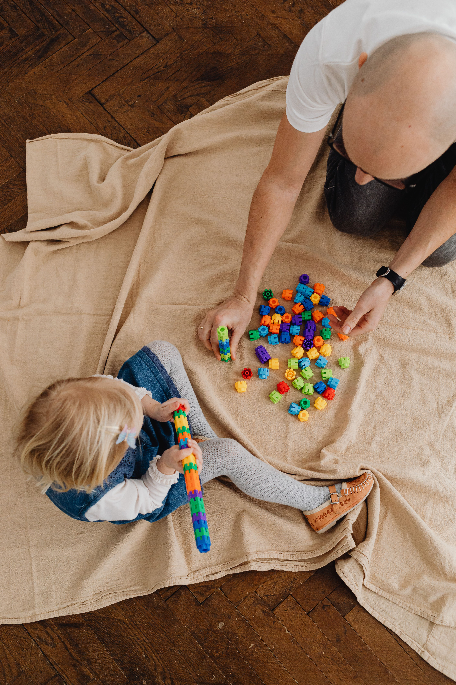
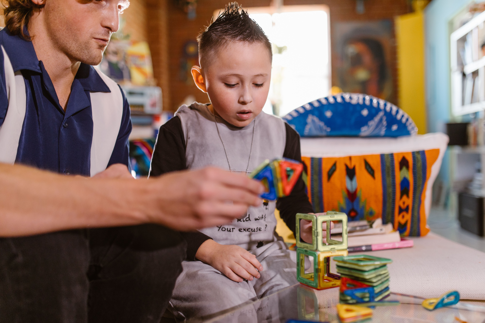

Acompanhamento terapêutico e inclusão escolar
Estudo sobre a atuação do acompanhante especializado e sua contribuição para a inclusão do aluno autista.
Abrir artigoConectamos famílias a acompanhantes terapêuticos e reunimos informações confiáveis sobre o Transtorno do Espectro Autista.
Queremos aproximar famílias de acompanhantes terapêuticos e tornar a busca por apoio mais simples, clara e acolhedora.
Reunimos informações sobre o Transtorno do Espectro Autista (TEA) em um espaço pensado para quem cuida. Acreditamos no respeito às diferenças, na escuta e na singularidade de cada criança.
Sobre nós
Carl Rogers 1902 - 1987
Crie sua conta como família ou acompanhante terapêutico.
Veja perfis e escolha o profissional ideal.
Fale diretamente com o profissional escolhido.
Combine valor, horários e modalidade.
Comece o acompanhamento com tranquilidade.
entre os pais ou responsáveis e o profissional.

Seu trabalho também merece um espaço. Crie seu perfil, apresente sua abordagem e especialidades e conecte-se com famílias que procuram apoio psicológico. Faça parte do ATtention e leve seu cuidado a mais pessoas.
Quero fazer parteAqui você encontra artigos e vídeos educativos sobre o Transtorno do Espectro Autista (TEA), com informações para apoiar famílias e educadores no dia a dia.
Estudo sobre a atuação do acompanhante especializado e sua contribuição para a inclusão do aluno autista.
Abrir artigoDiscussão sobre práticas de acompanhamento e os desafios encontrados no processo de inclusão escolar.
Abrir artigoEstudo sobre o acompanhamento terapêutico como estratégia de intervenção no desenvolvimento da criança com TEA.
Abrir artigoConte o que você achou do site e ajude a tornar este espaço ainda melhor. Deixe seu comentário.
Esse site traz informações muito importantes para quem trabalha na educação infantil. Além de recursos e orientações, também precisamos de mais profissionais preparados dentro das salas de aula, para que cada criança receba a atenção e o acompanhamento que precisa.
O ATtention é uma plataforma digital que conecta pais e responsáveis de crianças com Transtorno do Espectro Autista (TEA) a profissionais de saúde mental especializados.
Não, a plataforma atua exclusivamente como um canal de divulgação e intermediação, cobrando apenas taxas de uso. O contrato de prestação de serviços é firmado de forma direta entre a família e o psicólogo escolhido.
Os profissionais parceiros podem oferecer até três modalidades de atendimento: presencial na residência da criança, presencial no ambiente escolar e sessões online. A oferta do atendimento domiciliar ou escolar depende da aceitação prévia do próprio profissional.
Para que o atendimento ocorra na escola, o psicólogo precisa concordar previamente com a modalidade e os pais ou responsáveis têm a obrigação de comunicar a instituição de ensino de forma formal sobre a presença do profissional externo antes do início do acompanhamento.
Não. O atendimento online é estritamente restrito aos momentos em que a criança está em casa. Essa regra existe porque participar de uma chamada durante a aula prejudicaria a rotina escolar, os colegas de turma e o professor.
Cada psicólogo cadastrado possui uma página de apresentação profissional própria. Esse perfil exibe de forma transparente a formação, especializações, experiência, disponibilidade de horários e os valores cobrados, permitindo que as famílias comparem as opções antes da contratação.
O público-alvo são os pais e responsáveis por crianças diagnosticadas com TEA que buscam suporte psicológico regular e integrado entre a casa e a escola. Os psicólogos cadastrados atuam como parceiros prestadores de serviços que utilizam o site para divulgar seu trabalho e captar clientes, de forma semelhante à relação de restaurantes com aplicativos de delivery.